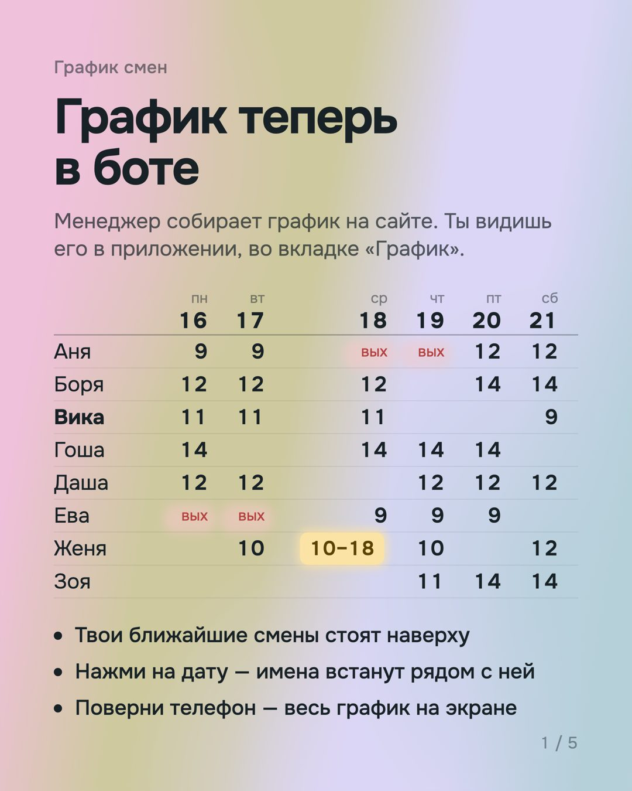
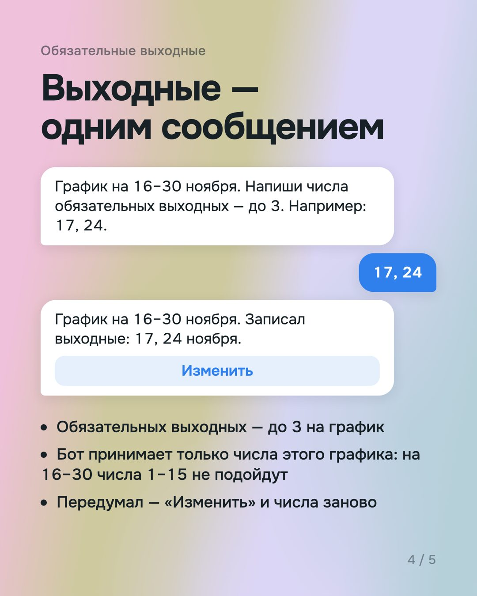
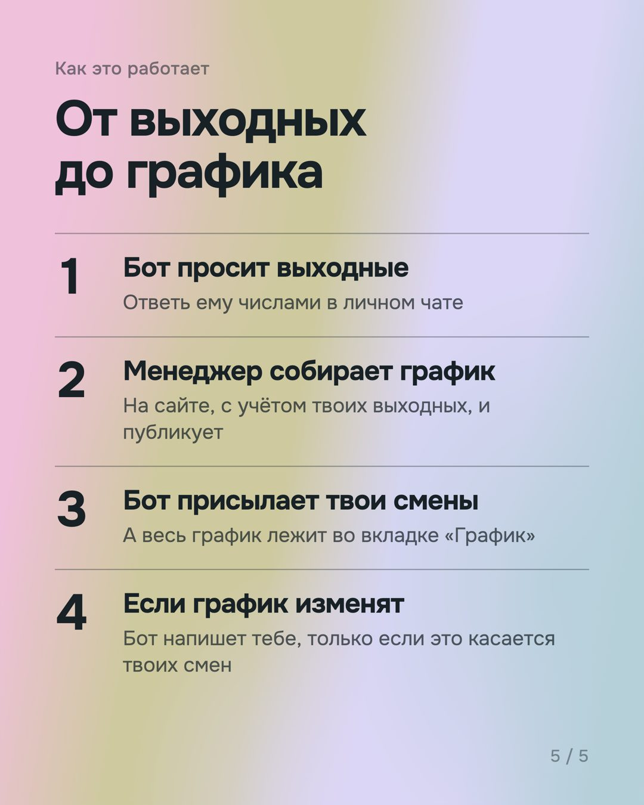

Бот для официантов
Официант работает двенадцать часов на ногах. Чаевые получает наличными и переводом, смены узнаёт из графика, который составляет менеджер, а выходные просит в общем чате.
Я официант. Я сделал бота, который берёт это на себя. Летом он считал только мои чаевые, а теперь по нему работает график целого ресторана.
Чаевые
Записывать чай некогда: в одной руке поднос. Поэтому запись — одно сообщение.
Бот сам понимает, что «чай» — это чаевые, а «такси» — расход. Номер стола суммой не считается. Ошибся счётом — кнопка под записью.
Чаевые на карту приходят уведомлением банка. Переписывать его глупо: уведомление просто пересылают боту.
Смена кончается в два ночи. Если сутки начинать в полночь, одна смена превращается в две, и средний чай падает вдвое. Поэтому сутки в боте начинаются в шесть утра.
Имени в базе нет. Коллеги не должны гадать, видит ли автор бота, кто сколько заработал.
Первое знакомство
Раньше бот здоровался длинным рассказом о своих возможностях. Коллеги его не дочитывали и не понимали, с чего начать.
Теперь он предлагает одно действие: записать чай, добавить график или пропустить. Остальное человек найдёт, когда понадобится.
Смены
Накануне смены, в семь вечера, бот пишет: «Завтра у тебя смена с 11:00. Хорошего вечера!» Утром уже некогда.
Смены можно подписать в календарь телефона. Раньше коллеге на это понадобилось пять шагов: кнопка, ещё кнопка, инструкция в браузере, ссылка в тексте, добавление событий. Теперь это одна кнопка, которая сразу открывает подписку в «Календаре».
В календарь попадают только смены и время. Деньги — никогда.
Кнопка не пишет «подключено»: телефон не сообщает боту, согласился ли человек. Обещать то, чего не знаешь, нельзя.
Фото графика
График и отчёт о продажах приходят коллегам фотографией. Бот пробовал читать их нейросетью.
Нейросеть путала строки: брала имя одного человека и цифры соседа. На синтетических таблицах всё работало, а настоящий отчёт она прочитала как «18 октября 2017» с одним показателем из шести.
Ошибка в чужих деньгах хуже ручного ввода. 3 ноября от фото отказались.
График
Менеджер составляет график по вечерам. Пожелания лежат в разных чатах, обмены сменами теряются в переписке.
Правила графика нигде не записаны. Я расспросил коллег: смена двенадцать часов, закрытие в 23, в будни выходят пятеро, в выходные шестеро, закрывают всегда трое, денежные дни делятся поровну. Правила важнее пожеланий: смену набирают, даже если кого-то придётся позвать из выходного.
По этим правилам программа собирает черновик. Сам график делает менеджер: она знает то, чего нет ни в каких правилах.
Черновик собирается сразу в трёх вариантах. У каждого — плюсы и минусы в цифрах, названия нейтральные: А, Б, В. Менеджер выбирает и правит руками.
Менеджер работает за компьютером, поэтому график собирается на сайте. Вход — через бота, кодом или QR. Кнопка Телеграма попросила бы номер телефона.

Выходные
Перед новым графиком бот спрашивает выходные. Отвечают обычным сообщением: «17, 24».


Обязательных выходных — до трёх. Это предел, а не норма: если человек попросил два, третий программа не добавит. Больше трёх тоже можно, их согласует менеджер.
«Хочу воскресенья» или «2/2» — это пожелание. Бот так и отвечает: это пожелание, а не обязательный выходной, программа постарается его учесть.
Менеджер видит, кто уже ответил — например, «выходные: 7 из 11», — и все выходные ещё до сборки. Коллеги чужих выходных до публикации не видят.
Публикация
Менеджер нажимает «Опубликовать». Каждый получает свои смены в боте, они появляются в календаре телефона, а накануне вечером приходит напоминание. Весь график лежит во вкладке «График».
Если график поменяют, бот напишет только тем, кого это касается.
Запуск
8 ноября в бота позвали весь ресторан. Первый же ответ был такой: «Желательные воскресенья а так мне 2/2 нравится». Бот увидел цифры и решил, что это сумма.
Дальше хуже. «Нужны выходные 17, 19» бот записывал как расход 17 ₽ и чаевые 19 ₽.
Утром любые числа становились деньгами. Вечером фраза о выходных стала выходными, а «чай 500» по-прежнему записывается. Ответы сокращены.
Исправили в тот же день. Теперь фраза о выходных никогда не становится деньгами, и за этим следит тест.
Ещё знакомство предлагало прислать фото графика, от которого отказались неделей раньше. Тексты писали под старый бот, а людей позвали в новый. С тех пор правило: прежде чем звать людей, пройти их путь самому.
Результаты
12 ноября менеджер опубликовала первый рабочий график. Коллеги получили смены на телефоны и напоминания накануне.
Перед публикацией менеджер многое поправила руками. Что и почему, разберём на следующем графике.
| График на 1–15 ноября | Вручную | Программа |
|---|---|---|
| Нарушения правила прихода | 7 | 0 |
| Денежных дней на человека | 2–5 | 3–4 |
| Часов на человека | 71–96 | 83–85 |
Чего пока не знаем. Сколько времени это экономит менеджеру: замера не было. Как коллеги находят график и понимают «грязные» и «чистые» чаевые: это проверим, глядя, как они пользуются ботом на своих телефонах.
Титры
- Продукт, интерфейс, тексты
- Алексей Сергеев
- Правила графика
- коллеги ресторана
- Итоговый график
- менеджер ресторана
- Код
- ИИ-агенты Codex и Claude Code по моим решениям
- Шрифты
- Inter, IBM Plex Mono